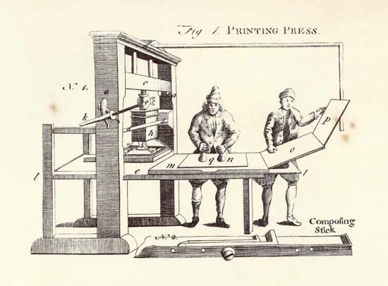

Johannes Gutenberg & The Printing Revolution
Johannes Gutenberg's invention of the printing press in the 15th century was a turning point in history. It revolutionized the spread of knowledge, making books more affordable and widely accessible. Before the printing press, books were hand-copied, a labor-intensive process that made them scarce and expensive. Gutenberg's innovative system of movable type allowed for faster production, leading to an explosion of literacy and the rapid dissemination of ideas across Europe. His first major printed work, the Gutenberg Bible, showcased the potential of this groundbreaking technology.
The impact of the printing press extended far beyond literature. It played a crucial role in the Renaissance, Reformation, and the Scientific Revolution by enabling scholars to share their discoveries and ideas with a much broader audience. The standardization of texts improved education and academic research. The printing press also paved the way for newspapers and mass communication, shaping the way societies received and processed information. Gutenberg’s invention remains one of the most significant contributions to human progress, fundamentally changing the way knowledge is preserved and shared.